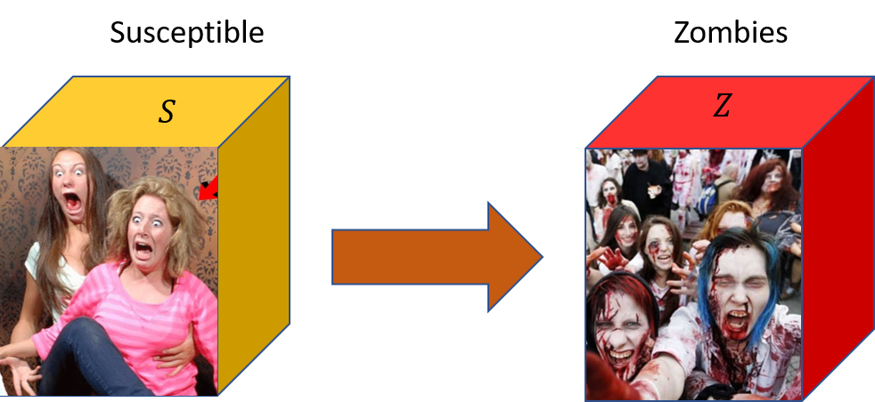
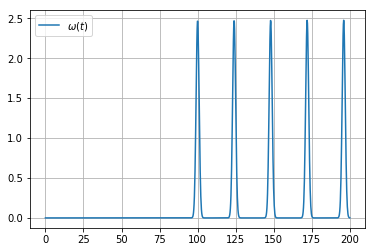
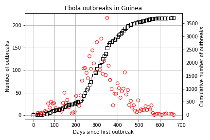

Introduction
In this project we are modeling the worst, but expecting (solving for) the best. What might happen if zombies invade a little village in Norway, and how much time do the inhabitants have to postpone or prevent the apocalypse? After modeling zombies, we will apply the same kind of mathematical model to real data for outbreaks of the Ebola virus in West Africa (2014-2016).
Figure 1: Prepare for the worst (From the AMC show ''The Walking Dead'')
In this project, more than any other, you have to have control over numerical uncertainty, and instabilities - your very future may depend on it!
Modeling a zombie outbreak - \( SZ \) model
All of our mathematical models will be deterministic compartment models [1]. We let go of detailed descriptions, to gain equations that are mathematical tractable. Assume for simplicity that we only have two groups (compartments) of individuals:
- \( S \) - Susceptible: humans that are exposed to being turned into a zombie.
- \( Z \) - Zombies, humans that have been bitten or scratched by zombies.
Figure 2: A two-compartment model. Note that only transport from the class of exposed humans to zombies are allowed. Zombies are never cured, if you are bitten you are dead, dead, dead, ...

The compartments are assumed to be well mixed, meaning that pairs of individuals in the population interact with equal probability. To develop a mathematical model, we need to estimate the rate of flow between the two compartments in figure 2. During a time interval \( \Delta{t} \), a certain number of human-zombie pairs will meet, and in each such encounter there is a chance that the human is infected. Let \( \mathcal{C}(N) \) be the rate at which any individual in the population contacts another individual, i.e., the average number of contacts made per unit time. Since at time \( t \) there are \( Z(t) \) zombies, we assume the probability of meeting a zombie is \( Z(t)/N \). Finally, let \( p_Z \) denote the probability that a human-zombie encounter results in an infection. Then, we can model the reduction in the human population going from time \( t \) to \( t+\Delta t \) as
$$ \begin{equation} S(t+\Delta t)-S(t)=-\beta\cdot\Delta t\cdot\frac{Z(t)}{N}\cdot{S(t)}\,, \tag{1} \end{equation} $$where we have defined \( \beta=p_{Z}\cdot{\mathcal{C}(N)} \).
We have here assumed the contact-rate to be a constant independent of population size. Other assumptions are possible, and care should be taken when interpreting results from the literature [2].
The \( \beta \) factor implicitly contains a lot of biomedical, physical, and sociological factors; for example, if the humans are unfit, they might not be able to escape the zombies. In the beginning of a zombie outbreak, \( \beta \) is likely to be large, because humanity might not understand the severity of the situation, or they may be in denial. Thus, \( \beta \) is most likely a time dependent parameter, which will decrease once humans start to realize that zombies are dangerous.
The total population count \( N=S(t)+Z(t) \) is regarded as constant in our simple model, which means that we ignore phenomena such as birth, natural death, immigration/emigration, etc. Dividing both sides of the above equation with \( \Delta t \), and taking the limit \( \Delta t\to 0 \), we find:
$$ \begin{align} \tag{2} \frac{\mathrm{d}S(t)}{\mathrm{d}t}&=-\beta\cdot\frac{S(t)Z(t)}{N}\\ \tag{3} \frac{\mathrm{d}Z(t)}{\mathrm{d}t}&=\frac{\mathrm{d}(N-S)}{\mathrm{d}t} = -\frac{\mathrm{d}S(t)}{\mathrm{d}t} =\beta\cdot\frac{S(t)Z(t)}{N}\,. \end{align} $$Clearly, if there are no infected individuals at time zero, nothing will happen later either. We shall therefore assume that \( Z_{0}\equiv{Z(0)}\geq{1} \); typically \( Z_0=1 \).
The analytical solution to the SZ-model, equations \eqref{eq:SIR1) and (ref{eq:SIR2}, is
$$ \begin{align} \tag{4} S(t)&=\frac{(S_0+Z_0)\frac{S_0}{Z_0}\exp(-\beta{t})}{1+\frac{S_0}{Z_0}\exp(-\beta{t})} \\ Z(t)&=\frac{S_0+Z_0}{1+\frac{S_0}{Z_0}\exp(-\beta{t})} \,, \tag{5} \end{align} $$where \( S_0=S(0) \), and thus \( S_0+Z_0=N \).}
Exercise 1: No hope?
Figure 3: A view from Sokndal (left) and Dirdal (right).
Sokndal and Dirdal are two small villages in Rogaland. Two scientists from these places went to an international conference on numerical methods in Haiti. During the conference, an excursion was arranged to a rural area, and a strange tomato salad consisting of, among other things, pufferfish venom, was served [3]. After arriving back in Norway, both scientists got a fever, stopped eating, and subsequently started to behave suspiciously.
Dirdal has about 683 inhabitants, and Sokndal 3305 [4]. We want to use the SZ-model to investigate a potential zombie invasion in these two places. For the initial phase of the zombie outbreak, suppose that the two scientists are staying with their closest family ( \( S \) = 2 ), that the duration of contact is 10 hours, and that there is a 20$\%$ chance of transmitting the infection to the family members. From this, we estimate a value for \( \beta \) as follows:
$$ \begin{equation} \beta\frac{Z}{N} \Delta{t}=\beta\frac{1}{3}\cdot{10}\text{ hours}=0.20\,, \tag{6} \end{equation} $$from which we find \( \beta=0.06 \) 1/hr.
Task 1. Make a figure in which you compare the fraction of the total population that are predicted to turn into zombies in the two locations, using the analytical solution in equation (4).
Task 2. Find the critical points of the model, and explain why the entire human population will be eradicated and turned into zombies in the limit \( t\rightarrow{\infty} \), regardless of the value of \( \beta>0 \)!
Hint: Rewrite equation (3), using that \( S(t)=N-Z(t) \).
Exercise 2: Numerical solver implementation
The SZ-model can be recast into the following general form:
$$ \begin{equation} \tag{7} \frac{d\mathbf{y}}{dt}=\mathbf{f}(\mathbf{y},t)\,, \end{equation} $$where
$$ \begin{align} \mathbf{y}&=(S,Z) \tag{8}\\ \mathbf{f}(\mathbf{y},t)&=(-\beta S(t)Z(t),\beta S(t)Z(t))\,. \tag{9} \end{align} $$Develop your own numerical solver(s) that can handle any system of ODEs of the form (7). This means that the right-hand side \( \mathbf{f}(\mathbf{y},t) \) should be provided as an input argument to a suitably defined Python function/class.
Task 1.
Implement one of the following options:
- the Forward Euler Scheme
- Runge-Kutta (2. or 4. order)
- adaptive solver
Task 2.
- Use your implementation to solve the SZ-model numerically. Test your code against the analytical solution, assuming \( \beta \) to be equal to the value we estimated above.
- Play with the step size, i.e. make \( \Delta t \) progressive larger - explain what you observe
Exercise 3: Predicting the fate of Sokndal and Dirdal
Later on in a zombie outbreak, people become more aware and not so easily fooled by the hordes of undead; after all, zombies are not known to be particularly bright. To capture this behavior, the zombie-infection rate is now assumed to be time dependent and assumed to decline exponentially:
$$ \begin{equation} \beta\to\beta(t)=\beta_0 e^{-\lambda t}. \tag{10} \end{equation} $$We have introduced a new parameter \( \lambda \), that can be estimated as follows: Suppose that after a specific time \( T \), the probability of getting infected has been reduced to 60 \( \% \) of its initial value. We can then estimate \( \lambda \) from:
$$ \begin{equation} e^{-\lambda T}=0.6, \tag{11} \end{equation} $$from which it follows that
$$ \begin{equation} \lambda=-\frac{1}{T}\ln 0.6. \tag{12} \end{equation} $$The updated model can be again be written in the form (7), the only difference now being that \( \beta=\beta(t) \) is time-dependent. We shall consider two cases:
- Sokndal outbreak: after 48 hours, the probability of being infected by a zombie has dropped to 60$\%$ of its initial value.
- Dirdal outbreak: people are very tolerant to unorthodox behavior, which is usually a good thing, but here it has the consequence that it takes 72 hours before the probability of zombie infection drops to 60$\%$ of its initial value.
Task 1.
- Estimate \( \lambda \) from the provided information about the Sokndal and Dirdal outbreaks.
Task 2.
- Solve the SZ-model numerically, but this time replace the constant \( \beta \)-factor with the time-dependent \( \beta_0 e^{-\lambda t} \). Roughly how many people survive the zombie outbreak in the two locations now?
Exercise 4: Counter attacks - Kill them all?
In our second model the humans might survive, but that is only because the probability of being infected eventually drops to zero; the zombies are still wandering around. Let us now refine our model further:
- So far, we have assumed that bitten humans turn into zombies instantaneously. This is a conservative assumption, and seem to be supported by various movies and TV shows. However, other sources [5] report that a latency / incubation period of about 24 hours may be realistic.
- At any given time, we assume a certain number of zombies to be killed by the humans; they are thus effectively removed from both the human and the zombie populations.
- To make it more realistic, we also allow the humans to perform violent attacks at regular time intervals [6]
Figure 4: SEZR model.

Translated to the language of mathematics, we now wish to solve a system with four compartments, see figure 4
$$ \begin{align} \tag{13} \frac{\mathrm{d}S(t)}{\mathrm{d}t}&=-\beta(t)\cdot\frac{S(t)Z(t)}{N}\\ \tag{14} \frac{\mathrm{d}E(t)}{\mathrm{d}t}&=\beta(t)\cdot\frac{S(t)Z(t)}{N}-\sigma\cdot{E(t)}\\ \tag{15} \frac{\mathrm{d}Z(t)}{\mathrm{d}t}&=\sigma\cdot{E(t)}-(\alpha+\omega(t))\frac{S(t)Z(t)}{N}\\ \tag{16} \frac{\mathrm{d}R(t)}{\mathrm{d}t}&=(\alpha+\omega(t))\frac{S(t)Z(t)}{N}\,. \end{align} $$The first new compartment, \( E(t) \), represents the class of exposed humans, i.e., those that have been bitten or scratched by a zombie, but which still remain non-contagious to others. The parameter \( \sigma \) is the fraction of such people that turn into zombies per unit time; alternatively, we may view \( 1/\sigma \) as the incubation time of the zombie disease, and set it equal to \( 24 \) hrs.
The second new compartment, \( R(t) \) represents killed (removed) zombies. In the same way that a certain fraction of human-zombie encounters result in transmission of the disease, a certain number of encounters also lead to the human killing the zombie; in the model, the sum \( \alpha+\omega(t) \) is therefore a measure of the probability that the zombie will have its brain destroyed (or separated from its head). Alternatively, \( 1/(\alpha+\omega(t)) \) may be viewed as the 'mean infectious period' of the zombie disease. Note that \( \alpha \) is a constant factor, and may be thought of as the background rate of zombie-killing. On the other hand, the function \( \omega=\omega(t) \) describe the violent attacks [6].
# attacks occur at specified times following the zombie outbreak:
attacks = [100,124,148,172,196] # hrs
a = 20*beta
def omega(t, a, attacks):
"""
Zombie attack function
Input
-----
t: float, time
a: float, strength of attacks
attacks: a list with times for attacks
Output
------
sys[0]: float
"""
return a*np.sum([np.exp(-.5*(t-ti)**2) for ti in attacks])
In figure 5, the function \( \omega(t) \) is shown.
Changing the factor in front of (t-ti)**2 changes the duration of the
attacks. The parameter a should be chosen to be much larger than \( \beta \),
because humans are much smarter than the zombies, and have more advanced
weapons.
Figure 5: Attack function.

\( \mathcal{R < /font>_0 \), can be thought of as a number which determine whether a disease can spread through the population (very important for ebola, HIV, polio, etc). It represents the average number of new infected cases produced, in an entirely susceptible population, by a typical infected individual [7]. In our model, it is a good approximation to define it as
$$ \begin{equation} \tag{17} \mathcal{R}_0\simeq\frac{\beta(t)}{\alpha + \omega(t)}. \end{equation} $$Thus, if \( \mathcal{R}_0>1 \) we have a zombie apocalypse.}
Task 1.
- Assume \( \omega(t)=0 \), and \( \beta = constant \), choose suitable value for \( \alpha \). Run a couple of simulations (choose Sokndal or Dirdal). Is it possible to survive the zombie apocalypse if \( \beta/\alpha >1 \)?
Task 2.
- Assume \( \beta = constant \), turn on violent attacks (i.e. use
omega(t, a, attacks)as defined above). Is it now possible to survive if \( \beta/\alpha>1 \)?
If the number of zombies or infected drops below one, it makes sense to set \( \beta \) and \( \sigma \) $\to0$. There is no such thing as a fractional zombie or human.
Exercise 5: Ebola epidemic in West Africa
Finally, we want to adapt our model to handle the case of the Ebola virus. Data for Ebola outbreaks are freely available at the website of the World Health Organization (WHO), and a subset of the data have been stored in a more convenient format in the following text files:
-
ebola_cases_guinea.dat -
ebola_cases_liberia.dat -
ebola_cases_sierra_leone.dat
In each of these files, the third column contains reported new cases (confirmed+probable) of the Ebola virus in the given country. For completeness and to avoid confusion, we present the equations to be used here:
$$ \begin{align} \tag{18} \frac{\mathrm{d}S(t)}{\mathrm{d}t}&=-\beta(t)\cdot\frac{S(t)Z(t)}{N}\\ \tag{19} \frac{\mathrm{d}E(t)}{\mathrm{d}t}&=\beta(t)\cdot\frac{S(t)Z(t)}{N}-\sigma\cdot{E(t)}\\ \tag{20} \frac{\mathrm{d}Z(t)}{\mathrm{d}t}&=\sigma\cdot{E(t)}-\gamma Z(t)\\ \tag{21} \frac{\mathrm{d}R(t)}{\mathrm{d}t}&=\gamma Z(t).\\ \tag{22} \end{align} $$These equations are very similar to equations (13)-(16). However, the compartment \( Z \) now represents people infected with the Ebola virus. Also, \( R \) represents previously infected people that have either 1) recovered (become immune), or 2) died. For simplicity, we do not distinguish between these two above alternatives; persons in both categories are assumed to not have any bearing on whether the virus will continue to spread. Accordingly, we model the rate of 'removal' from the Z-compartment with a term \( \gamma Z \), in which the constant \( 1/\gamma \) is the average time until recovery/death (mean infectious period). As done previously, we compute \( \beta \) from
$$ \begin{equation} \beta(t)=\beta_0e^{-\lambda t}, \tag{23} \end{equation} $$where \( \beta_0 \) and \( \lambda \) are unknown parameters; they need to be determined from data.
Task 1. For each of the three West African countries, make a figure in which you plot
- the number of new cases of Ebola registered at any given moment in time, and the cumulative amount.
If done correctly, the end result for Guinea should look something like figure 6.
Figure 6: Outbreak of the Ebola virus in Guinea, 2014-2015.

It has been estimated that the average infectious period for the Ebola virus is one week, and that the latency period is 9.7 days [8], hence \( 1/\gamma=7 \) days, and \( 1/\sigma=9.7 \) days. Assuming these parameters to be valid, we want to fit the four-compartment model with an exponentially decaying \( \beta \)-factor to the data. For simplicity, we will assume a fixed population size of \( N=10^7 \) in all three countries; the exact value should not be that important as long as \( S(t)\approx{N < /font> \).}
Task 2.
For the case of Guinea, experiment manually by varying \( \beta_0 \) and \( \lambda \) until the model produces something that resembles figure 6.
Part 3. (OPTIONAL!!) Next, we want to use an automatic optimization method to fit the model to the data for all three countries. One possibility is to use scipy.optimize.curve_fit. You may for example take the following Python code as a starting point:
# To do: store time in days in array t
# To do: store cumulative number of Ebola cases in array Ct
def non_linear_func(t, beta0, lam):
# To do:
# Solve system of ODEs and return cumulative number of
# outbreaks at each time t.
pass
bds = ((0.0, 0.0), (np.inf, np.inf))
popt, pcov = sp.optimize.curve_fit(non_linear_func, t, Ct, bounds=bds)
print('Curve-fit: beta0={}, lambda={}.'.format(popt[0], popt[1]))
For each country, make a plot like figure 6 in which you compare the model to the data.
For Liberia, the number of reported outbreaks are very sporadic initially. Therefore, you might need to start counting days at a later date than what is done in the text file.
Guidelines for project submission
You should bear the following points in mind when working on the project:
- Start your notebook by providing a short introduction in which you outline the nature of the problem(s) to be investigated.
- End your notebook with a brief summary of what you feel you learned from the project (if anything). Also, if you have any general comments or suggestions for what could be improved in future assignments, this is the place to do it.
- All code that you make use of should be present in the notebook, and it should ideally execute without any errors (especially run-time errors). If you are not able to fix everything before the deadline, you should give your best understanding of what is not working, and how you might go about fixing it.
- Avoid duplicating code! If you find yourself copying and pasting a lot of code, it is a strong indication that you should define reusable functions and/or classes.
- If you use an algorithm that is not fully described in the assignment text, you should try to explain it in your own words. This also applies if the method is described elsewhere in the course material.
- In some cases it may suffice to explain your work via comments in the code itself, but other times you might want to include a more elaborate explanation in terms of, e.g., mathematics and/or pseudocode.
- In general, it is a good habit to comment your code (though it can be overdone).
- When working with approximate solutions to equations, it is very useful to check your results against known exact (analytical) solutions, should they be available.
- It is also a good test of a model implementation to study what happens at known 'edge cases'.
- Any figures you include should be easily understandable. You should label axes appropriately, and depending on the problem, include other legends etc. Also, you should discuss your figures in the main text.
- It is always good if you can reflect a little bit around why you see what you see.
Bibliography
- W. O. Kermack and A. G. McKendrick. A Contribution to the Mathematical Theory of Epidemics—I, Proceedings of the Royal Society of London. Series A, Containing papers of a mathematical and physical character, 115(772), pp. 700-721, 1927.
- M. Begon, M. Bennett, R. G. Bowers, N. P. French, S. Hazel and J. Turner. A Clarification of Transmission Terms in Host-Microparasite Models: Numbers, Densities and Areas, Epidemiology & Infection, 129(1), pp. 147-153, 2002.
- W. Davis. The Serpent and the Rainbow, New York: Simon and Schuster, 2010.
- Store Norske Leksikon. Accessed: 2019-10-24, https://snl.no.
- M. Brooks. The Zombie Survival Guide: Complete Protection From the Living Dead, Broadway books, 2003.
- H. P. Langtangen, K.-A. Mardal and P. Røtnes. Escaping the Zombie Threat by Mathematics, Zombies in the Academy-Living Death in Higher Education, 2013.
- O. Diekmann, J. A. P. Heesterbeek and J. A. Metz. On the Definition and the Computation of the Basic Reproduction Ratio R0 in Models for Infectious Diseases in Heterogeneous Populations, Journal of mathematical biology, 28(4), pp. 365-382, 1990.
- Z. Wong, C. Bui, A. Chughtai and C. Macintyre. A Systematic Review of Early Modelling Studies of Ebola Virus Disease in West Africa, Epidemiology & Infection, 145(6), pp. 1069-1094, 2017.